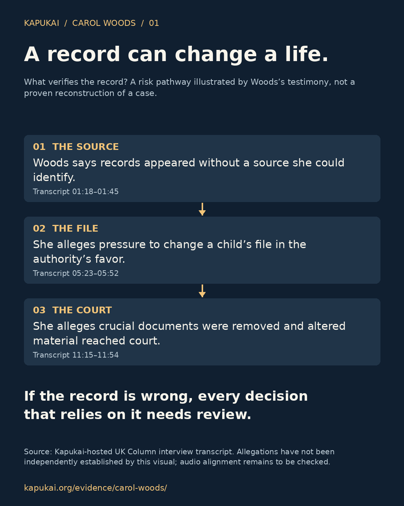
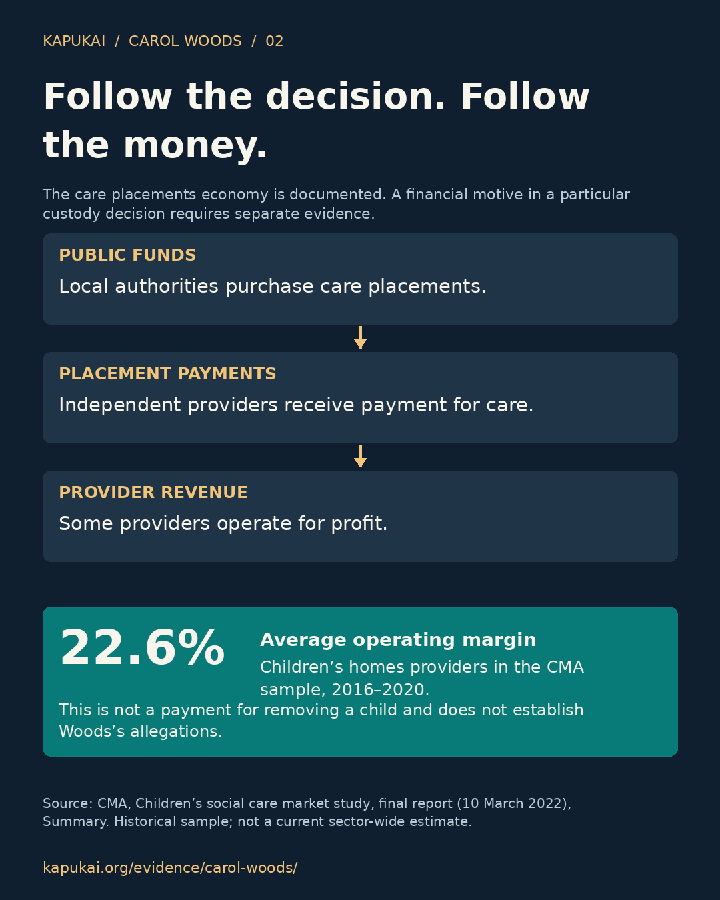
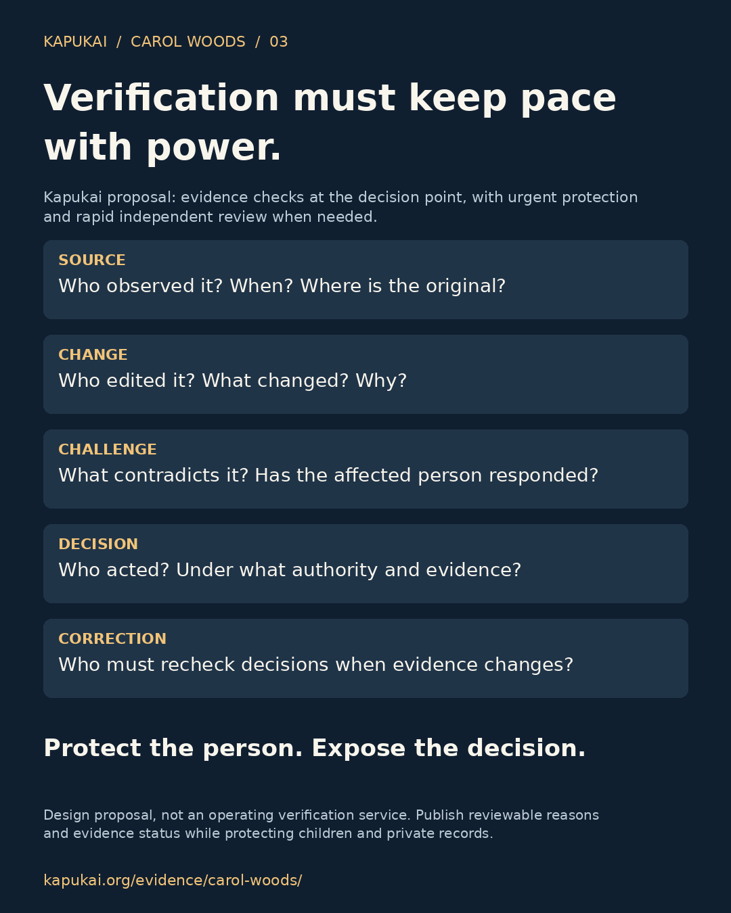

When the file becomes the evidence
Woods alleges unexplained records, pressure to alter a child’s file, and removal of crucial documents before court use. These statements need original records and independent corroboration.



A structured evidence page for a public interview concerning alleged record alteration, institutional retaliation, identity distortion, and life-critical harms when records override reality.
THE PROBLEM IN THREE PICTURES
When a disputed record informs a custody decision, the consequences reach a child, a family and potentially a paid care placement. Follow each link: the source, the decision, the payment and the correction.
Three different evidence statuses: Woods’s testimony describes alleged conduct. The CMA documents market conditions. Kapukai proposes verification safeguards. Neither the interview nor the market study establishes that a particular removal was financially motivated, or that all custody decisions lack verification.
Woods alleges unexplained records, pressure to alter a child’s file, and removal of crucial documents before court use. These statements need original records and independent corroboration.

The CMA’s 2022 report found market problems and high profits among large providers. To establish an improper incentive in a particular case, connect the decision to its contracts, invoices, recipients and any relevant communications.

A proposed decision record should identify the evidence, edits, contradictions, accountable decision-maker and correction deadline. Emergency action needs recorded reasons and prompt independent review. Publish an appropriately redacted account of public decisions.

The supplied transcript has transcription artifacts. Timestamps are approximate transcript references; audio has not been independently checked for this release. This page is not a live verification service.
This page is structured as an evidence reference entry. It should hold the original source, preservation copy, transcript, timestamps, doctrine tags, and review notes.
This interview is relevant because it describes, at the level of the speaker’s allegations, a pattern in which documentary records, file edits, naming distortions, and institutional coordination appear to override verified human reality.
In this interview, Carol Woods describes alleged file alteration within child protection processes, removal of crucial documents, use of doctored material in court, retaliation following challenge to institutional conduct, and later identity fragmentation through administrative records and naming variance.
This page documents statements made in a public interview. Claims should be treated as interview allegations unless independently corroborated by primary documents, court records, official reports, or archival material.